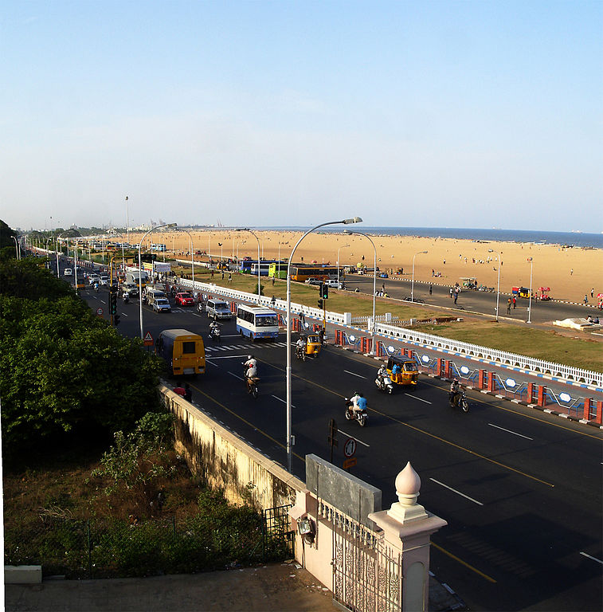
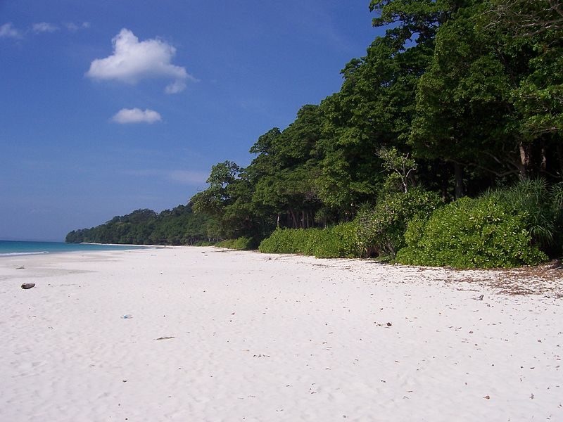
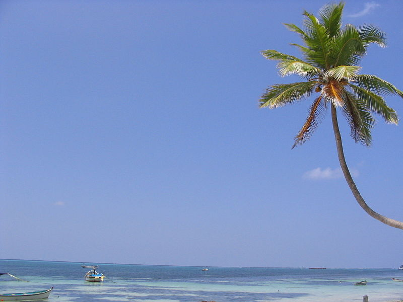

1
1 5
5Beaches in India
India offers a wide range of tropical beaches with silver/golden sand to coral beaches of Lakshadweep. States like Kerala and Goa have exploited the potential of beaches to the fullest. However, there are a lot many unexploited beaches in the states of Andhra Pradesh, Gujarat, Maharastra, Tamil Nadu and Karnataka. These states have very high potential to develop them as future destinations for prospective tourists. Some of the famous tourist beaches are:
Important Beaches
Marina Beach 
Marina Beach is a natural urban beach in the city of Chennai, India, along the Bay of Bengal, part of the Indian Ocean. The beach runs from near Fort St. George in the north to Besant Nagar in the south, a distance of 13 km (8.1 mi), making it the longest natural urban beach in the country and the world's second longest.
Andaman and Nicobar Islands
The Andaman and Nicobar Islands are a group of islands at the juncture of the Bay of Bengal and Andaman Sea, and are a Union Territory of India. The territory is 150 km (93 mi) north of Aceh in Indonesia and separated from Thailand and Burma by the Andaman Sea.
Lakshadweep
Lakshadweep formerly known as the Laccadive, Minicoy, and Amindivi Islands is a group of islands in the Laccadive Sea, 200 to 440 kilometres (120 to 270 mi) off the South Western coast of India. The islands are the northernmost of the Lakshadweep-Maldives-Chagos group of islands, which are the tops of a vast undersea mountain range.
Kanyakumari 
Kanyakumari is especially popular in India for its spectacular and unique sunrise and sunset, thanks to its being nearly surrounded by ocean waters. On balmy, full-moon evenings, one can also see the moon-rise and sunset at the same time.